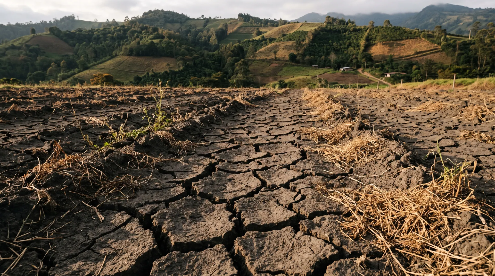
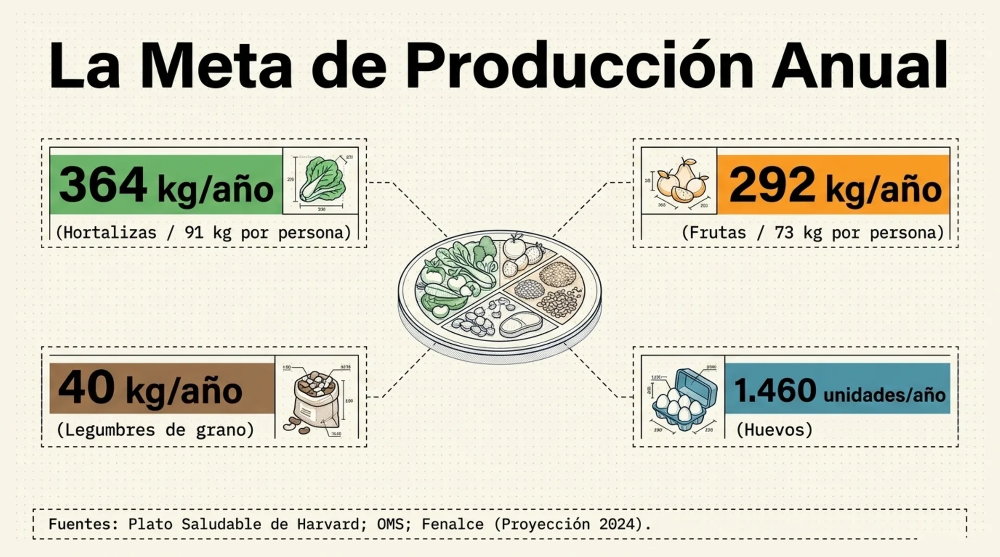
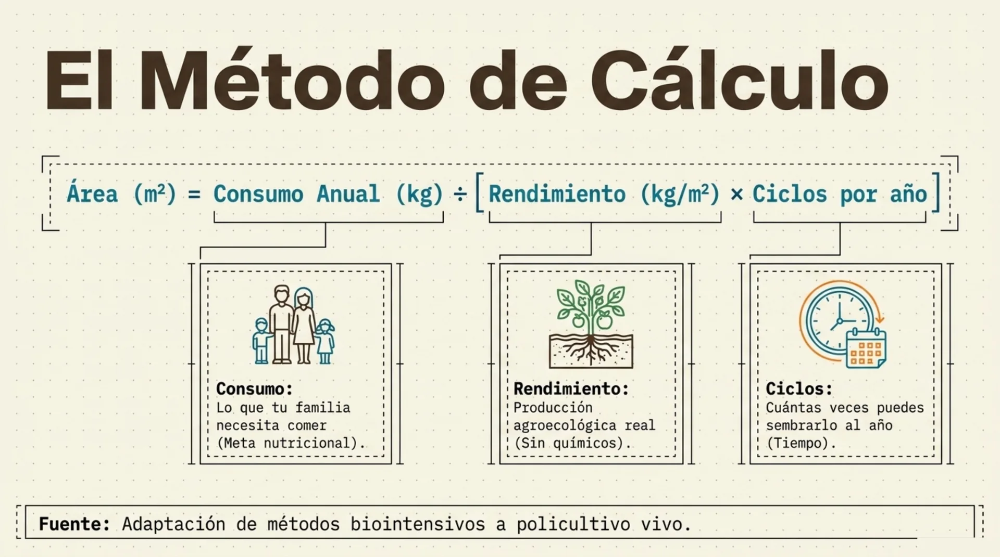
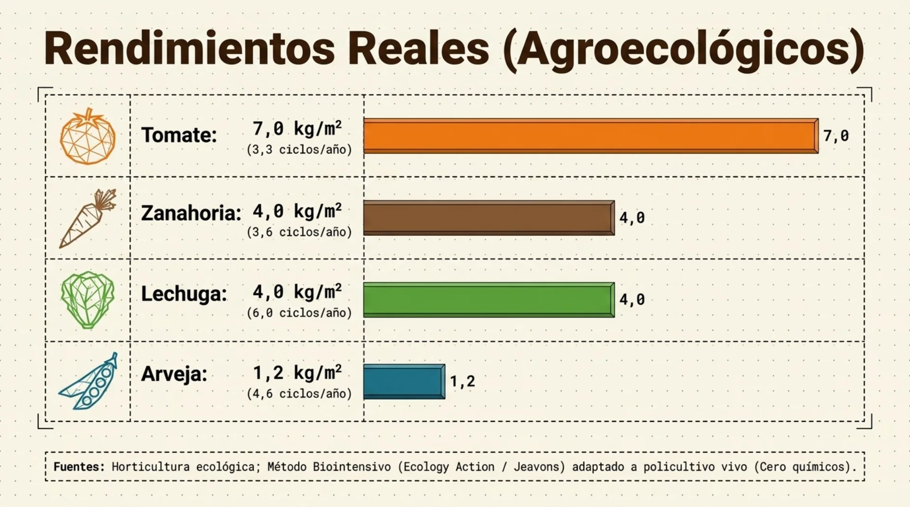
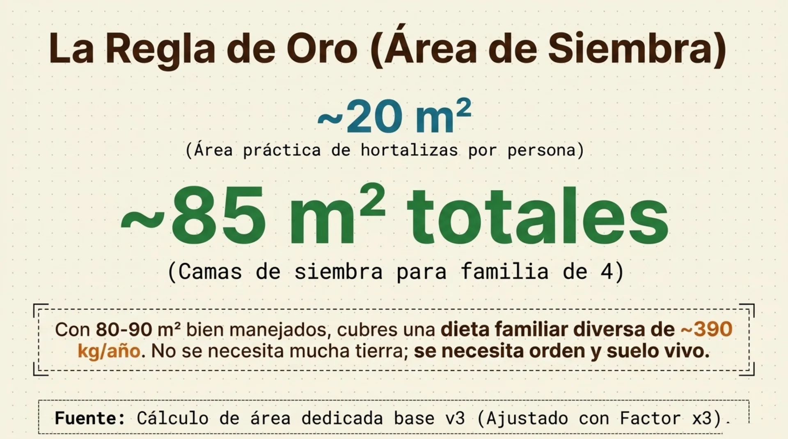
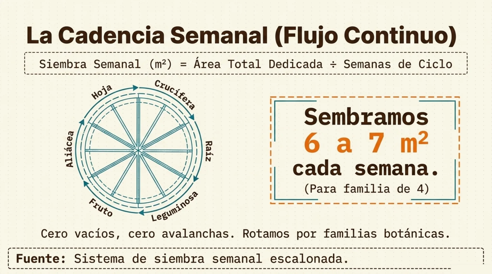
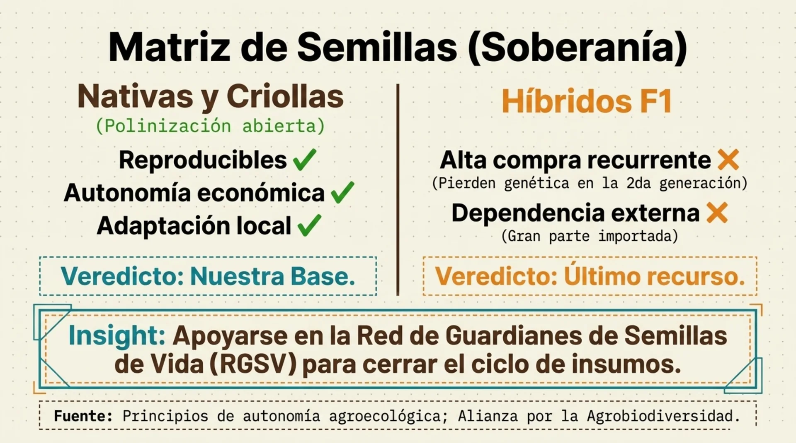
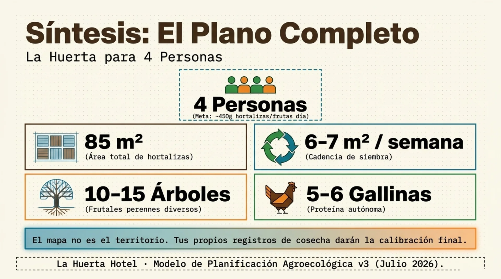

Qué sembrar,
cuánto y cada cuándo
De la dieta de tu familia a los metros de tu cama de siembra.
Ya tienes suelo vivo.
Falta decidir qué le
pones encima.
Los tres principios anteriores construyen la despensa. Este decide quién come de ella, en qué orden y en qué cantidad.
Los 7 principios de
inmunidad del bosque
Hoy sales con tu calendario de siembra armado y la calculadora funcionando con tus propios números.
La pregunta de fondo
es cuánto y cada cuándo.
Casi todo el mundo siembra lo que le gusta, todo el mismo día. Dos meses después tiene 40 lechugas juntas y nada más. Una avalancha seguida de un desierto.
Son tres diversidades distintas
Unas fijan nitrógeno, otras descompactan, otras cubren el suelo. Cada una tiene un oficio.
Árbol, arbusto, hortaliza, cobertura, raíz. Toda la columna de luz ocupada.
La misma cama con cultivos distintos a lo largo del año. Es la que casi nadie planea.

Un monocultivo es una
mesa servida para la plaga
El mismo principio del mercado lleno de los microorganismos, ahora encima del suelo.
Se rota por familia
| Familia | Quiénes son | En la base de datos |
|---|---|---|
| Solanaceae | Tomate, ají, pimentón, berenjena, papa | 13 cultivos |
| Fabaceae | Fríjol, arveja, habichuela, guandul | 8 cultivos |
| Brassicaceae | Brócoli, coliflor, repollo, rábano | 8 cultivos |
| Apiaceae | Zanahoria, cilantro, perejil, arracacha | 5 cultivos |
16 familias en total y 58 cultivos cargados, más los que tú agregues.
Las plagas leen familias, no etiquetas
- El rábano y el brócoli comparten la misma polilla.
- La mizuna se vende como lechuga, pero es crucífera. Detrás del repollo, la rotación no existió.
- La papa y el tomate comparten tizón tardío. Nunca seguidos en la misma cama.
- Cada familia explora una profundidad distinta: alternar también nutre mejor.

Policultivo en 3D
- Alto: frutales y maderables.
- Medio: arbustos y banco de proteína.
- Bajo: hortalizas, el ingreso semanal.
- Suelo: coberturas vivas y rastrojo.
- Abajo: raíces de distinta profundidad.
La rotación
por fases
El orden en que una cama recibe a sus cultivos durante el año. Es lo que viste en los videos del lunes, ahora con la lógica detrás.
Cuatro fases, siempre el mismo orden
Fríjol, arveja, habichuela. Fijan nitrógeno y dejan la cama cargada.
Lechuga, acelga, brócoli. Se comen el nitrógeno de la fase 1.
Zanahoria, remolacha, cebolla. Sin exceso de nitrógeno.
Tomate, calabacín, papa. Los más exigentes, y al cerrar entra bocashi.
Cada fase le deja algo a la siguiente
- La leguminosa trae nitrógeno del aire y lo deja en la cama.
- La hoja es la que más nitrógeno pide y entra cuando está disponible.
- La raíz entra cuando ya bajó: antes haría follaje y no raíz.
- El fruto es el más exigente y cierra con bocashi.
En una cama nueva o compactada, el maíz entra antes de la fase 1 y descompacta con la raíz.

Lo que rompe la rotación
- Repetir familia en la misma cama por comodidad.
- Dejar la cama desnuda entre fase y fase.
- Sembrar todo el mismo día: sin escalonamiento hay tandas, no rotación.
Los tres se corrigen con un calendario. Eso es lo que vamos a armar en la segunda hora.
De la dieta a los
metros cuadrados
El cálculo que convierte «quiero comer de mi finca» en un número que se puede sembrar el lunes.
La meta de producción anual

Tres variables, nada más

Rendimientos agroecológicos

La regla de oro del área

Los 20 m² ya traen el factor ×3 adentro
Quien calcula 85 m² netos y encima le aplica el factor termina pidiendo 255 m² y abandona antes de empezar.
Cero vacíos, cero avalanchas

La calculadora
de siembras
La regla de oro sirve para entender. Esto sirve para sembrar el lunes: tus personas, tus cultivos, tus metros. El archivo queda en la comunidad desde hoy.

Tres casillas y una
columna de Sí o No
- Personas a alimentar. Tu familia o tus clientes.
- Frecuencia de siembra. 7 días, o 15 si vas cada quince.
- Ancho de las camas. 1 metro en La Huerta.
Después marcas Sí en lo que de verdad come tu gente. Todo lo demás se calcula solo.
Cuatro tipos de cultivo
Lechuga, brócoli, zanahoria. Un pedacito cada semana. 39 de los 58.
Tomate, calabacín, pimentón. Se siembra el lote completo. 19 de los 58.
Pepino, habichuela, arveja. Hay que construir la espaldera antes.
Cebollín, jengibre, cúrcuma, yuca. Ocupa su área permanente.
Un pedacito cada semana
- m² totales = (consumo semanal × ciclo en días) ÷ (rendimiento × 7)
- m² por siembra = m² totales × (frecuencia ÷ ciclo)
- metros lineales = m² por siembra ÷ ancho de cama
Lechuga crespa para cuatro personas: 2,5 m² en producción, 0,44 m² cada semana, siete plántulas. Cuando la primera está lista, la segunda lleva una semana.
La carrera de relevos
El relevo se calcula por el tiempo que dura dando fruto, no por el que tarda en crecer. El lote 2 arranca el día que el lote 1 se cansa.
Lo que la calculadora te devuelve
| Cultivo | Tipo | m² totales | Metros lineales | Plantas |
|---|---|---|---|---|
| Lechuga crespa | Única | 2,5 | 0,44 m | 7 |
| Brócoli | Única | 3,9 | 0,36 m | 2 |
| Zanahoria | Única | 3,9 | 0,23 m | 11 |
| Tomate chonto | Múltiple | 1,7 | 1,71 m | 3 |
Metros lineales por siembra semanal, con cama de un metro de ancho.
El número completo
Esos 30,8 m² netos, por el factor ×3, son los 85 m² de la regla de oro. Es el mismo número por dos caminos.

52 semanas y
52 bolsitas
La hoja CALENDARIO dice qué sembrar en cada semana del año, con los de cosecha única escalonados y los fijos en la semana 1.
En la bodega, una bolsa marcada por semana con sus semillas adentro. El lunes se saca la bolsa y se siembra.
La misma lógica, con animales
| Especie | Consumo por persona y semana | Lo que calcula |
|---|---|---|
| Gallina ponedora | 12 huevos | Gallinas en postura y m² de galpón |
| Pollo de engorde | 705 g | Aves en levante y lotes por año |
| Cordero | 375 g | Corderos activos y área de potrero |
| Tilapia roja | 180 g | Peces y m² de estanque |
Datos propios de La Huerta LAB cruzados con Fenavi, PorkColombia, Fedegán y AUNAP.
Cómo meter tu cultivo
- En BASE_DATOS, las filas amarillas del final: nombre, categoría, consumo, ciclo, rendimiento, fase, tipo y familia.
- Columna L: 0 si es de cosecha única, o los días que produce si es múltiple.
- En CALCULADORA, escribes el nombre exacto en una fila amarilla y marcas Sí.
Con tus registros de cosecha corriges el rendimiento. Ahí la calculadora deja de ser nuestra y pasa a ser tuya.
La rotación por fases en La Huerta
Recuperadoras, hojas y flores, raíces y aliáceas, frutos pesados. Las cuatro fases caminando por las camas reales.
La semilla decide tu autonomía

Todo junto, en una página

Tu primera planificación
con la calculadora.
- Abre el archivo y pon tu número de personas.
- Marca Sí en 10 o 15 cultivos: los que de verdad come tu gente.
- Mide con cinta los metros lineales de la primera semana.
- Arma las bolsitas de las próximas 12 semanas.
Sube una foto de tu primera siembra medida · antes del próximo miércoles
Principio 5 · Agua
Las plantas beben, no comen
Los videos se liberan el lunes: terrazas en curvas de nivel y zanjas de infiltración, trazado y construcción en campo.
Todo lo que calculamos hoy depende de que el agua se quede adentro del lote.